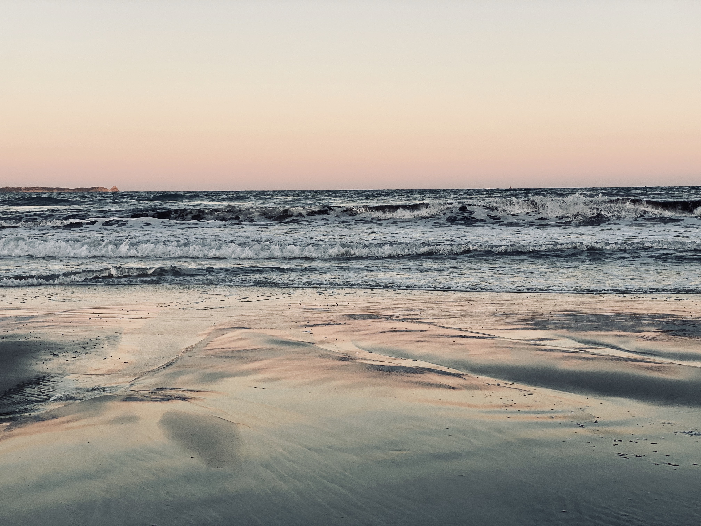
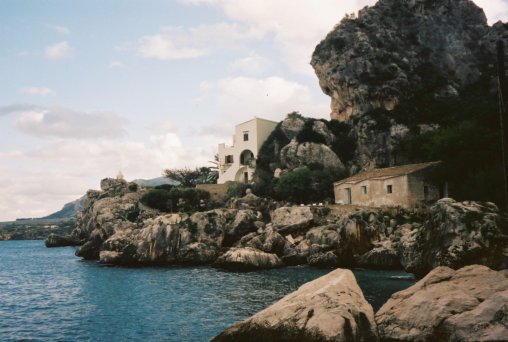
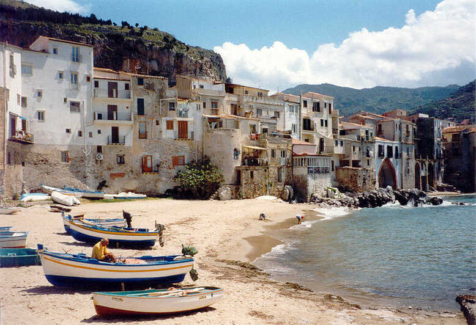
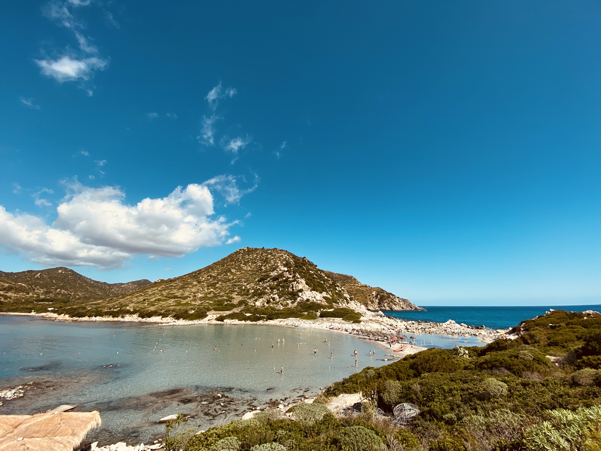

Europa
Sizilien




Buchten, dieses Bild habe ich selbst mit meiner Analogen Kamera in der Bucht "Castellammare del Golfo" geschossen. Von diesen kleinen schönen Orte gibt es in Sizilien tausende.

Cefalu ist eine der beliebtesten Städte in Sizilien und an der Nordküste am Fuß der Rocca di Cefalù, eines 270 Meter hohen Kalkfelsens. Schon von weitem ist das Wahrzeichen der Stadt, der Normannendom San Salvatore, gut sichtbar. Am Wasser entlang zu laufen, und die bis in die Antike zurückreichende Architektur zu betrachten, ist wirklich schön.
